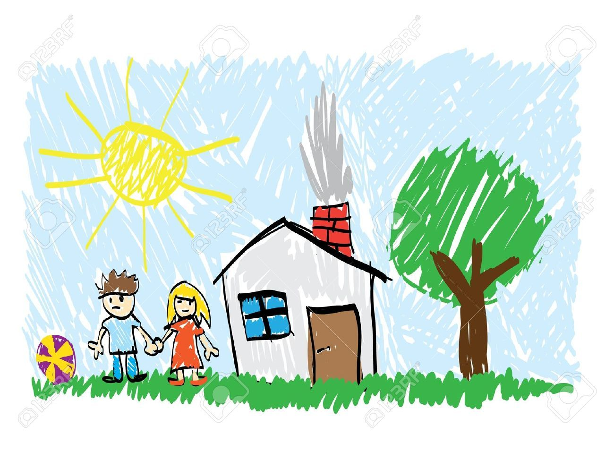
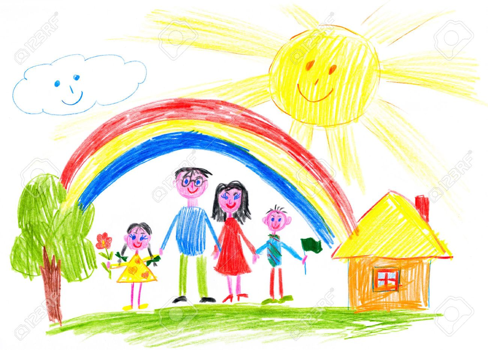

Welcome to my history
Hi my name is Hugo Cano, I am 18 years old and I was born in the state of Tabasco on September 30, 2006.

I currently live in Cancún, but I spent the first years of my life in Tabasco.
Today I’m going to tell you about my life — from my childhood to my plans for the future.
In this presentation, I am going to talk to you about my story, from my childhood to the moment when I am studying a degree in Cancun.
Take your snacks and listen carefully.
My childhood
As I already mentioned, I was born in Tabasco, where I spent half of my life. My dad’s name is Victor Cano, and my mom’s name is MarÃa Jesús. They always taught me good manners.
When I was 5 years old, I got my first puppy. When I was 4 years old, I started preschool.
Important Moments
Sports
When I was 11 years old, I was on a volleyball team, and we won a championship.
I have liked sports since I was little.
Math & Robots
In middle school and high school, I was one of the best students in math classes.
At the end of high school, I charged my classmates for doing their homework.
COVID-19 Time
During the pandemic, I discovered my passionate interest in technology, video games, and music.
I got sick with COVID-19, and despite not having any vaccine, the illness did not worsen.
High School
During high school, I was a calm and focused young person. My faith always kept me grounded and guided my decisions and actions. I was always diligent and responsible, consistently applying myself to my studies and respecting those around me.
Things I Love to Do
🎵 Music: I like to listen to love songs.
⚽ Sports: Volleyball, soccer, basketball, dance and Baseball.
💻 Computers: To program, develop, and design.
My Dreams
- I want to visit more countries.
- I want to work from home.
- I want to play on a professional volleyball team.
- I want to have a big house.
- I want to have a beautiful family.
Thanks for listening!